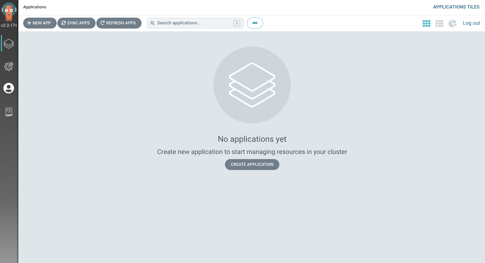

Accessing the Cluster GitOps Dashboard ⏱️ Estimated Time: 5 Minutes 👩💻 Role: Cluster Administrator Now that you’ve gotten access to your OpenShift cluster and confirmed that the Red Hat OpenShift GitOps components are up and running, it’s time to access the Argo CD dashboard. Red Hat OpenShift GitOps is based on the upstream Argo CD project, so it’ll feel familiar if you’ve the upstream project in the past. The Argo CD instance used in this workshop is deployed in the same OpenShift cluster that you’ll be customising and deploying applications into, as shown in the following image. It’s possible to deploy Argo CD on a separate cluster, but that’s outside the scope of this workshop. The Argo CD dashboard supports logins via the OAuth identity providers registered with the OpenShift cluster, or login via the Argo CD admin user and password. In this section you’ll be using the Argo CD admin user. Remember the htpasswd_provider and standard-users options you saw when you first logged into the OpenShift Web Console? Those were different identity providers. An OpenShift cluster can be configured with one or more identity providers to facilitate user authentication. Obtain the Argo CD Admin Password First, obtain the Argo CD admin user’s password: Open the Web Terminal using the >_ icon in the top-right corner of the OpenShift Web Console. Run the following command to get the Argo CD admin password from the openshift-gitops-cluster Secret: kubectl get secret openshift-gitops-cluster \ -o json \ -n openshift-gitops |\ jq '.data["admin.password"]' -r |\ base64 --decode | xargs echo Make a note of the password. You’ll need it in a moment. You can view the admin user’s password using the OpenShift Web Console instead of the Web Terminal by: Selecting the Administrator perspective from the top of the side-menu. Expanding the Workloads section and selecting Secrets in the side-menu. Selecting openshift-gitops in the Project dropdown. If the openshift-gitops project isn’t listed, make sure to enable the Show default projects toggle in the Project dropdown. Viewing the openshift-gitops-cluster Secret, and clicking Reveal Values. The following image shows what the Secrets section of the OpenShift Web Console shows if filter for the openshift-gitops-cluster Secret in the openshift-gitops Namespace. In case you’re wondering, you can view the openshift-gitops-cluster and other Secrets since you’re logged in as a user with cluster-admin permissions. By default, new OpenShift users will have limited permissions and will be unable to view resources such as Secrets. RBAC configuration is necessary to grant users access to resources. You’ll learn more about this in subsequent sections of this workshop. Access the Argo CD Dashboard Expand the Application Launcher icon (3x3 sqaure) in the top-right of the OpenShift Web Console. Click the Cluster Argo CD link. This will open a new browser tab. Accept the self-signed certificate warning if one appears. The login page will now appear. Ignore the Log in via OpenShift button! Login using the username admin and the password you obtained via the Web Terminal or OpenShift Web Console a few moments ago. The Argo CD dashboard will be displayed, and state that you have "no applications yet". You’ll take care of that in the next section!  Summary Excellent! You learned how to: Access Secrets using the oc/kubectl CLI, or using the OpenShift Web Console. Use the Web Terminal to execute commands using the oc (OpenShift) and kubectl (Kubernetes) CLIs. Access the Argo CD dashboard as the admin user. Setup First Steps with GitOps using Argo CD